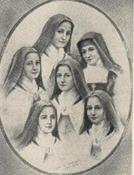

INFÂNCIA ESPIRITUAL
 “Feitos retumbantes não são para mim, que não posso pregar
o Evangelho e nem derramar o meu sangue ...Mas isso que importa? Nos lugares certos
os meus irmãos trabalham e cobrem minha ausência e de outras pessoas. Meu posto
como “criancinha” que sou, é junto do trono real, amando pelos que combatem”.
“Feitos retumbantes não são para mim, que não posso pregar
o Evangelho e nem derramar o meu sangue ...Mas isso que importa? Nos lugares certos
os meus irmãos trabalham e cobrem minha ausência e de outras pessoas. Meu posto
como “criancinha” que sou, é junto do trono real, amando pelos que combatem”.
“Mas que provas darei
de meu amor, já que o amor realmente só aparece com as obras? Pois bem, A criancinha
entreter-se-á em ofertar flores, procurando com seus perfumes envolver o trono
Divino e cantará com voz suave e agradável, o cântico de amor”.
“Sim, Dileto de minha alma,
eis como transcorrerá em VOSSA presença esta efêmera vida. Não tenho outro meio
de VOS provar o meu amor senão ofertando-LHE flores, isto é, não perdendo a
ocasião de fazer o bem, ou qualquer sacrifício em VOSSA honra, um olhar de
compaixão, de amizade ou de ternura, uma palavra útil, um conselho ou um
consolo, sempre aproveitando as ações mais simples e insignificantes,
fazendo-as por VOSSO Amor. Quero sofrer por amor e gozar as obras por
amor, porque estas, meu JESUS, são as flores que hei de VOS oferecer. Quantas
me aparecerem, quantas desfolharei diante de VÓS... E depois cantarei, cantarei
sempre, ainda que para colher as minhas rosas, tenha que me meter por entre
espinhos. E tanto mais melodioso será o meu cantar, quanto maior e mais
pungentes forem esses espinhos. E de que VOS servirão, meu JESUS, as minhas
flores e os meus cantos? Esta chuva perfumada, essas pétalas frágeis e sem
valor, esses cânticos suaves de amor, saídos de um peito pequenino e frágil,
estou certa que mesmo assim VOS hão de deliciar. Sim, estes “nadas” hão de alegrar-VOS, hão de fazer sorrir
a Igreja triunfante que está no Céu, que se apressará em tomar parte nos
folguedos de sua criancinha, recolhendo essas rosas desfolhadas e passando-as
pelas VOSSAS Divinas MÃOS para lhe dar valor infinito, e depois aspergi-las
sobre a Igreja padecente, que no Purgatório lava os seus pecados, para lhe
apagar as chamas ardentes da purificação, e também sobre a Igreja militante,
constituída pela humanidade de todas as gerações que buscam o caminho do
CRIADOR, para lhes anunciar o triunfo e proporcionar o bem que suas
vidas necessitam ”. (pág 263/264)

 A Bondade do SENHOR é tão grande, que ELE permitiu que se
cumprissem integralmente as palavras de Santa Teresinha. As pessoas que suplicam a
intercessão da Santinha de Lisieux junto a DEUS para alcançar uma graça, recebem
dela o presente de uma flor e a graça do CRIADOR. Acontece de fato uma chuva de
flores, como ela denomina os benefícios que o SENHOR derrama, através de sua
poderosa intercessão. Tudo acontece de modo encantador no silêncio do
coração: primeiro chega uma ou mais rosas, para anunciar ao suplicante que
a solicitação foi recebida pelo SENHOR, depois, vem a graça solicitada,
que sem dúvida, sempre transforma a vida das pessoas.
A Bondade do SENHOR é tão grande, que ELE permitiu que se
cumprissem integralmente as palavras de Santa Teresinha. As pessoas que suplicam a
intercessão da Santinha de Lisieux junto a DEUS para alcançar uma graça, recebem
dela o presente de uma flor e a graça do CRIADOR. Acontece de fato uma chuva de
flores, como ela denomina os benefícios que o SENHOR derrama, através de sua
poderosa intercessão. Tudo acontece de modo encantador no silêncio do
coração: primeiro chega uma ou mais rosas, para anunciar ao suplicante que
a solicitação foi recebida pelo SENHOR, depois, vem a graça solicitada,
que sem dúvida, sempre transforma a vida das pessoas.
Ela disse:
“NOSSO SENHOR há
de fazer-me todas as vontades no Céu, em prêmio pelo fato de eu nunca ter feito a minha
vontade na Terra.” (pág 386)

ENSINAR
O AMOR
Santa Teresinha parecia ter plena consciência da
missão para a qual, DEUS a enviara ao mundo. É como se tivesse aberto ante
seus próprios olhos o véu do futuro, porque de certo modo, não havia
segredos para ela. Por mais de uma vez desvendou os mistérios do
futuro em profecias que pronunciou, cuja realização já é um fato
concreto. Ela dizia: “Dei a DEUS somente amor, DEUS me pagará
com amor”. “Depois de minha morte, farei cair uma chuva de
rosas, que testemunhará o imenso Amor de DEUS
por mim”. (pág 293)
Santa Teresinha falou: “Chegam aos meus ouvidos alguns acordes
de bonito concerto longínquo e me veio ao pensamento: dentro em pouco ouvirei
melodias incomparavelmente mais bonitas e harmoniosas. Na verdade, o objetivo
principal de meus anseios, que faz meu coração palpitar com mais força, é o “Amor” que hei de receber e que também poderei manifestar. Sinto que na eternidade começará
a minha missão, a missão de fazer as pessoas amar a DEUS, como eu O amo... E para isto, tenho que ensinar as almas o “Meu Caminhozinho” (Pequeno Caminho). Quero passar o meu Céu fazendo o bem
na Terra, o que não será impossível, porque no seio da visão beatífica estão
os Santos Anjos rezando por nós. Assim, realizarei o meu objetivo sem descanso,
até o fim do mundo! Só quando o Anjo disser: “Passou o tempo”
(Ap 10,6) é que vou descansar e gozar a eternidade , porque completou a apuração do número
dos escolhidos, daqueles que junto com todos os habitantes do Paraíso,
louvarão e adorarão eternamente o CRIADOR”.
- “E que
caminhozinho é esse que você quer ensinar às almas?” Perguntou a Madre.
- Minha Madre, é o “Caminho da Infância
Espiritual”, o caminho da confiança e do
abandono completo nas mãos de DEUS. Quero indicar-lhes os pequeninos expedientes,
que tão bom resultado surtiram para mim. Quero dizer-lhes que a santidade neste
mundo pode ser alcançada com pequenos atos: ofertando a JESUS as flores dos pequenos
sacrifícios e cativando o SENHOR através de carícias e atenções. Porque foi
assim que eu O cativei, e por isso, hei de obter DELE o bom acolhimento que sem
dúvida acontecerá.” (pág 293/294)
Próxima Página
Página Anterior
Retorna ao Índice